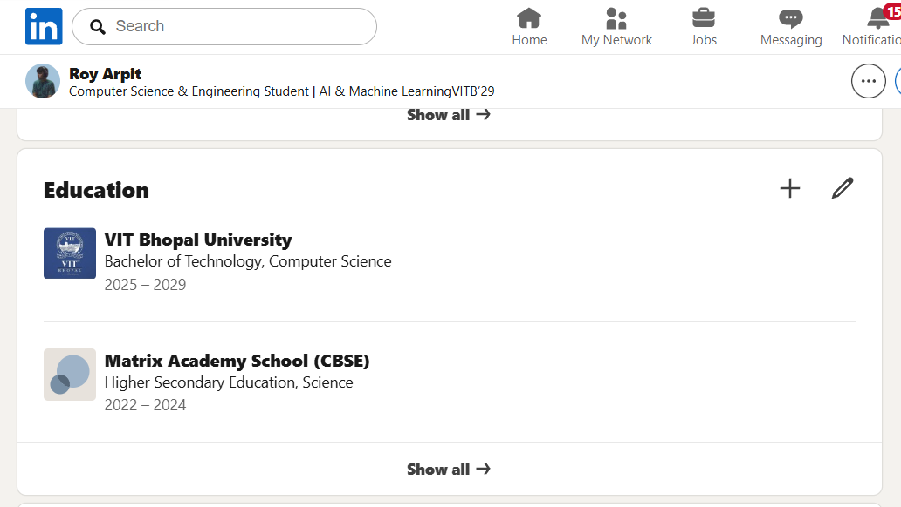
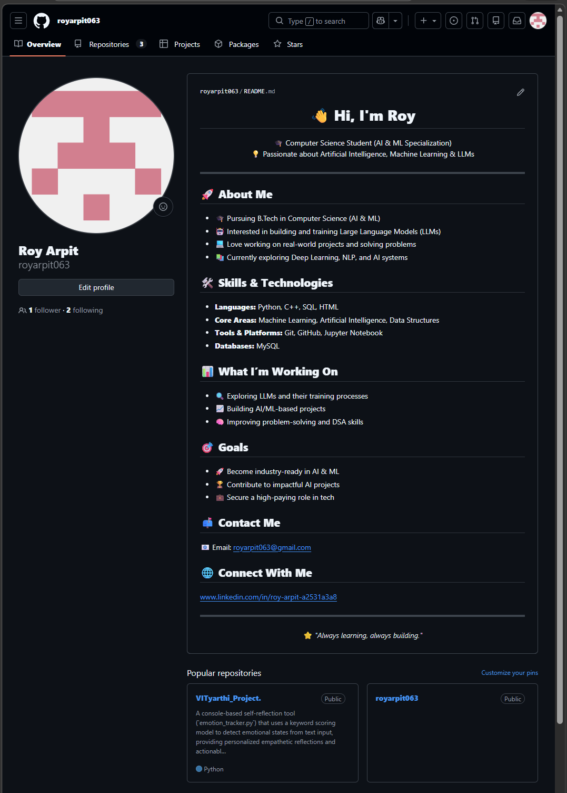

This task helped me understand the importance of building a professional digital presence. Creating profiles on platforms like GitHub and LinkedIn showed me how to present my skills, projects, and achievements effectively.
I learned that technical knowledge alone is not enough; it is also important to showcase it in a clear and professional way. Setting up my profiles gave me insight into personal branding and networking.
One challenge I faced was deciding what information to include, but it improved my understanding of structuring content.
In the future, I plan to keep updating my profiles and add more projects to strengthen my portfolio.

